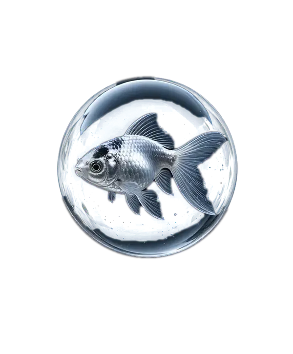

GYEOLLAK — 結落 / 缺落
01 — 하늘 · SKY결의 끝에서
결의 끝에서
한 방울이 맺힌다.
스크롤을 내리면 방울이 떨어지고, 뒤로 1px 실이 그려진다.
SCROLL
02 — 낙하 · DROP한 방울이
한 방울이
떨어져 나간다.
03 — 바다 · SEA닿는 순간,
닿는 순간,
번지기 시작한다.
04 — 수면 아래 · UNDER소리가 먼저 사라지고,
소리가 먼저 사라지고,
빛이 남는다.

05 — 금붕어 · GOLDFISH방울 안에서,
방울 안에서,
무언가 헤엄친다.
그록 테스트 droplet.mp4 · 검수 전
07 — 빛 · LIGHT흩어진 것들이
흩어진 것들이
한 곳으로 모인다.


08 — 사람 · 네 사람의 입구
우리는 닿는 순간부터
번지고 있었다
선을 따라 한 사람을 누르면 개인 프로필로
II 사람으로 들어가기 →